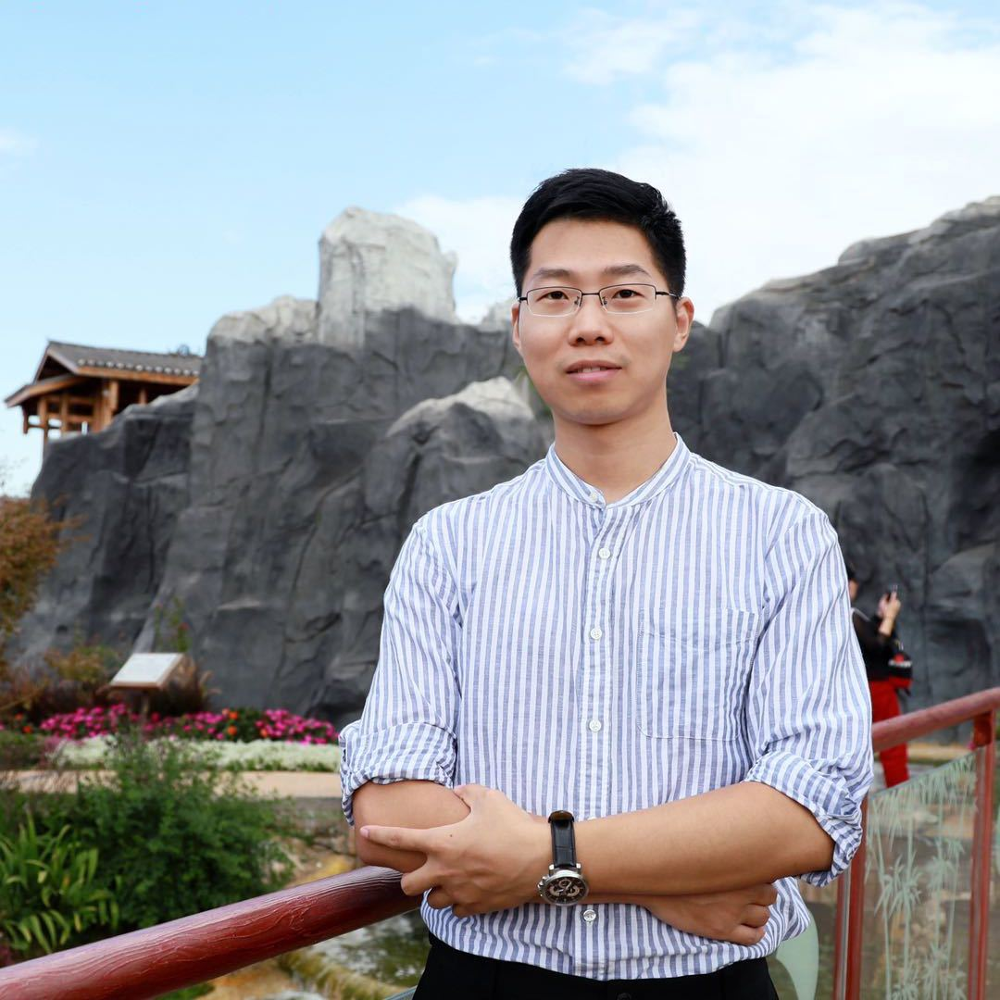

<!DOCTYPE html>
<html lang="en">

<head>
    <meta charset="UTF-8" />
    <meta name="description" content="Guoguang Du's home page">

    <title>Guoguang Du</title>
    <link rel='stylesheet" href="styles.css" />
</head>

<body>
    <div id="layout-content" style="margin-top:25px">
        <table>
            <tbody>
                <tr>
                    <td width="670">
                        <div id="toptitle">
                        <h1>Guoguang Du</h1>
    			</div>
    			<h3> CloudMinds Technologies</h3>
    			<p>
    				Senior Algorithm Engineer </br>
    				PhD of Computer Graphics From Beijing Normal University</br>
    				Wangjing SOHO Tower3, Chaoyang District, Beijing China </br>
    				</br>
    				Email: <a href="mailto:guoguangdu@126.com">guoguangdu [at] 126.com</a>
    			</p>
    			<p>
    				<a href="https://github.com/GeorgeDu"></a>
    				<a href="https://scholar.google.com/citations?user=Yr_OJbYAAAAJ&hl=zh-CN"></a>
    				<a href="https://www.linkedin.com/in/%E5%9B%BD%E5%85%89-%E6%9D%9C-14167595/"></a>
    				<a href="https://blog.csdn.net/dsoftware"></a>
    			</p>
    		</td>
    		<td></br></td>
    	<tr>
    </tbody>
</table>

<h2>Biography [<a href="./CV_weiweisun.pdf">CV</a>]</h2>
<p>
	<div style="text-align:justify"> I am currently a Ph.D. student (2018-) in 
	<a href="https://www.uvic.ca/engineering/computerscience/index.php">Computer Science</a>, <a href="https://www.uvic.ca/">University of Victoria</a>, supervised by <a href="https://vision.uvic.ca/people/kmyi/">Dr. Kwang Moo Yi</a>. 
	I closely work with <a href="https://gfx.uvic.ca/people/ataiya/">Dr. Andrea Tagliasacchi</a> and <a href="https://etrulls.github.io/">Dr. Eduard Trulls</a>.
	Before that, I received my M.Sc. degrees of Geomatics Engineering from University of Calgary
	advised by <a href="https://www.ucalgary.ca/rswang/">Dr. Ruisheng Wang</a>  in 2018, and B.Sc. degree of GIS from Wuhan University in 2016. 
</p>
<p>My research interest includes 3D computer vision and deep learning.</p>

<h2>News</h2>
<ul>
	<li>
		2020 May: <a href="https://github.com/vcg-uvic/acne">Code</a> for ACNe in Tensorflow 1.8 is released!
	</li>
	<li>
		2020 Apr: One paper accepted by IV2020.
	</li>
	<li>
		2020 Mar: One paper accepted by CVPR2020.
	</li>
</ul>

<h2>Publications [<a href="https://scholar.google.ca/citations?user=XXC5tSEAAAAJ&hl=en">Google Scholar</a>]</h2>
<ul>
	* below indicates equal contribution
	<li>
		<a href="https://arxiv.org/abs/2005.05528">PSDet:  Efficient  and  Universal  Parking  Slot  Detection</a><br>
		Zizhang Wu, <b>Weiwei Sun</b>, Man Wang, Xiaoquan Wang, Lizhu Ding, Fan Wang <br>
		<em> IV </em>, 2020.</br>
		<p style="margin-top:3px">
			[<a href="https://arxiv.org/abs/2005.05528">Paper</a>]
		</p>
	</li>
	<li>
		<a href="https://arxiv.org/abs/1907.02545/">ACNe: Attentive Context Normalization for Robust Permutation-Equivariant Learning</a><br>
		<b> Weiwei Sun </b>, Wei Jiang, Eduard Trulls, Andrea Tagliasacchi, Kwang Moo Yi.<br>
		<em> CVPR </em>, 2020.</br>
		<p style="margin-top:3px">
			[<a href="https://arxiv.org/abs/1907.02545">Paper</a>]
			[<a href="https://github.com/vcg-uvic/acne">Code</a>]
		</p>
	</li>

	<li>
		<a href="https://gfx.uvic.ca/pubs/2019/jwei2019sportsfield/paper.pdf">Optimizing Through Learned Errors for Accurate Sports Field Registration</a><br>
		Wei Jiang, Juan Camilo Gamboa Higuera, Baptiste Angles, <b> Weiwei Sun </b>, Mehrsan Javan, Kwang Moo Yi.<br>
		<em>WACV </em>, 2020.</br>
		<p style="margin-top:3px">
			[<a href="https://gfx.uvic.ca/pubs/2019/jwei2019sportsfield/paper.pdf">Paper</a>]
			[<a href="https://github.com/vcg-uvic/sportsfield_release">Code</a>]
		</p>
	</li>
	
	<li>
		<a href="https://arxiv.org/abs/1901.07124/">Linearized Multi-Sampling for Differentiable Image Transformation</a><br>
		Wei Jiang, <b>Weiwei Sun</b>, Andrea Tagliasacchi, Eduard Trulls, Kwang Moo Yi.<br>
		<em> ICCV </em>, 2019. <b>[Oral]</b></br>
		<p style="margin-top:3px">
			[<a href="https://arxiv.org/abs/1901.07124/">Paper</a>]
			[<a href="https://github.com/vcg-uvic/linearized_multisampling_release">Code</a>]
		</p>
	</li>


	<li>
		<a href="https://ieeexplore.ieee.org/document/8281008">Fully Convolutional Networks for Semantic Segmentation of Very High Resolution Remotely Sensed Images Combined With DSM</a><br>
		<b>Weiwei Sun</b>, and Ruisheng Wang.<br>
		<em>IEEE GRSL</em>, 2018.</br>
	</li>


	<li>
		<a href="https://www.ncbi.nlm.nih.gov/pmc/articles/PMC5695265/">Optic disc segmentation for glaucoma screening system using fundus images</a><br>
		Ahmed Almazroa, <b>Weiwei Sun</b>, Sami Alodhayb, Kaamran Raahemifar, Vasudevan Lakshminarayanan.<br>
		<em>Clinical ophthalmology</em>, 2017.</br>
	</li>
	
	<li>
		<a href="https://www.spiedigitallibrary.org/conference-proceedings-of-spie/10138/1013806/Optic-disc-segmentation--level-set-methods-and-blood-vessels/10.1117/12.2254174.short">Optic disc segmentation: level set methods and blood vessels inpainting</a><br>
		Ahmed Almazroa, <b>Weiwei Sun</b>, Sami Alodhayb, Kaamran Raahemifar, Vasudevan Lakshminarayanan.<br>
		<em>SPIE Medical imaging</em> , 2017.</br>
	</li>
	
	<li>
		<a href="https://ieeexplore.ieee.org/abstract/document/7345519/">Optic cup segmentation based on extracting blood vessel kinks and cup thresholding using Type-II fuzzy approach</a><br>
		Ahmed Almazroa, Sami Alodhayb, R Burman, <b>Weiwei Sun</b>, Kaamran Raahemifar, Vasudevan Lakshminarayanan<br>
		<em>IEEE IEM OPTRONIX</em> , 2015.</br>
	</li>


</ul>

<h2>Experience</h2>
<ul>
	<li>
		<div style="float:left; text-align:left"><a href="https://uwaterloo.ca/vision-image-processing-lab/">VIP Lab, University of Waterloo</a>, Waterloo, Canada</div> <div style="float:right; text-align:right">May. 2019 – Dec. 2019</div><br>
		Visiting Ph.D. Student<br>
		Advisor: <a href="http://www.eng.uwaterloo.ca/~jzelek/">John S. Zelek </a><br>
		Topic: Point clouds registration<br>
	</li>

	<li>
		<div style="float:left; text-align:left"><a href="http://www.zongmutech.com/">Perceptron Algorithm Group, Zongmu Technology Co. Ltd</a>, Beijing, China</div> <div style="float:right; text-align:right">May. 2018 – Aug. 2018</div><br>
		Computer Vision Research Intern<br>
		Advisor: <a href="">Zizhang Wu</a><br>
		Topic: Image segmentation<br>
	</li>
	
	<li>
		<div style="float:left; text-align:left"><a href="https://www.uber.com/info/atg">School of optometry, University of Waterloo</a>, Waterloo, Canada</div> <div style="float:right; text-align:right">May. 2015 – Aug. 2015</div><br>
		Image Processing Research Intern<br>
		Advisor: <a href="https://uwaterloo.ca/optometry-vision-science/people-profiles/vasudevan-lakshminarayanan">Vasudevan Lakshminarayanan</a><br>
		Topic: Digitial image processing<br>
	</li>
</ul>

<h2>Professional Activities</h2>
<ul>
	<!---<li>Conference Reviewer: ICCV 2017, CVPR 2018, ECCV 2018, ACCV 2018, CVPR 2019, ICCV 2019, IV 2019, BMVC 2019, NIPS 2019.</li>--->
	<li>Conference Reviewer:<br>
		&emsp; British Machine Vision Conference (BMVC) 2020.<br>
		&emsp; International Joint Conference on Artificial Intelligence (IJCAI) 2020.<br>
		&emsp; European Conference on Computer Vision (ECCV) 2020.<br>
		&emsp; IEEE Conference on Computer Vision and Pattern Recognition (CVPR) 2020.<br>
<!-- 		&emsp; International Conference on Learning Representations (ICLR) 2020.<br> -->
		&emsp; AAAI Conference on Artificial Intelligence (AAAI) 2020.<br>
		&emsp; British Machine Vision Conference (BMVC) 2019.<br>
<!-- 		&emsp; IEEE Conference on Computer Vision and Pattern Recognition (CVPR) 2019.<br> -->
		&emsp; IEEE International Conference on Computer Vision (ICCV) 2019: Geometry Meets Deep Learning.<br>
		&emsp; IEEE International Conference on Computer Vision (ICCV) 2019.<br>
		&emsp; IEEE Conference on Computer Vision and Pattern Recognition (CVPR) 2019: Image Matching.<br>
	</li>
<!-- 		&emsp; Neural Information Processing Systems (NeurIPS) 2019.<br> -->	
<!-- 		&emsp; IEEE Intelligent Vehicles Symposium (IV) 2019.<br> -->
<!-- 		&emsp; European Conference on Computer Vision (ECCV) 2018.<br> -->
<!-- 		&emsp; Asian Conference on Computer Vision (ACCV) 2018.<br> -->
<!-- 		&emsp; IEEE International Conference on Computer Vision (ICCV) 2019.</li> -->
</ul>

<ul>
	<li>Journal Reviewer:<br>
		&emsp; Land Use Policy<br>
	</li>
</ul>


<h2>Honors & Awards</h2>
<ul>
	<li>
		<div style="float:left; text-align:left">Uvic Graduate Fellowship</div> <div style="float:right; text-align:right">2018</div>
	</li>
	<li>
		<div style="float:left; text-align:left">Mitacs Globalink Graduate Fellowship</div> <div style="float:right; text-align:right">2016</div>
	</li>
	<li>
		<div style="float:left; text-align:left">Outstanding Graduate, WHU</div> <div style="float:right; text-align:right">2016</div>
	</li>
	<li>
		<div style="float:left; text-align:left">Mitacs Globalink Summer Internship Award</div> <div style="float:right; text-align:right">2015</div>
	</li>
	<li>
		<div style="float:left; text-align:left">National Motivational Scholarship, Ministry of Education of P.R. China</div> <div style="float:right; text-align:right">2013, 2014</div>
	</li>
</ul>

<!-- <h2>Patents</h2>
<ul>
	<li>CN103335611 B, “GPU-based object 3D shape measurement method”, Issued 24 Feb 2016.</li>
	<li>CN202738624 U, “Automated tank”, Issued 20 Feb 2013.</li>
</ul> -->

<h2>Teaching</h2>
<ul>
	<li>
		<div style="float:left; text-align:left">Computing Engineering</div> <div style="float:right; text-align:right">Fall, 2017</div>
	</li>
	<li>
		<div style="float:left; text-align:left">Operating System</div> <div style="float:right; text-align:right">Summer, 2020</div>
	</li>
</ul>

<div id="footer">
	<div id="footer-text"></div>
</div>
	<center>©  Weiwei Sun | Last updated: 05/12/2020</center>
</div>

<script>
  (function(i,s,o,g,r,a,m){i['GoogleAnalyticsObject']=r;i[r]=i[r]||function(){
  (i[r].q=i[r].q||[]).push(arguments)},i[r].l=1*new Date();a=s.createElement(o),
  m=s.getElementsByTagName(o)[0];a.async=1;a.src=g;m.parentNode.insertBefore(a,m)
  })(window,document,'script','https://www.google-analytics.com/analytics.js','ga');

  ga('create', 'UA-88615920-1', 'auto');
  ga('send', 'pageview');

</script>

</div>
</body>
</html>
